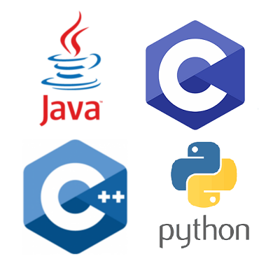
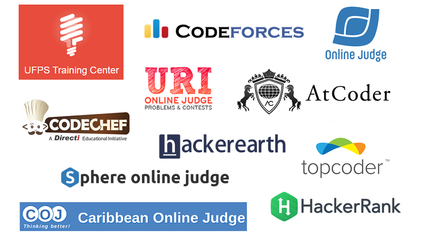
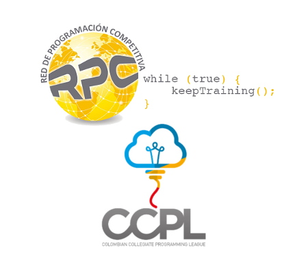
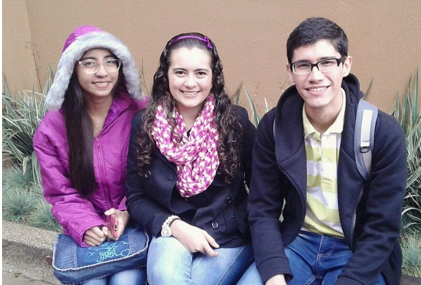
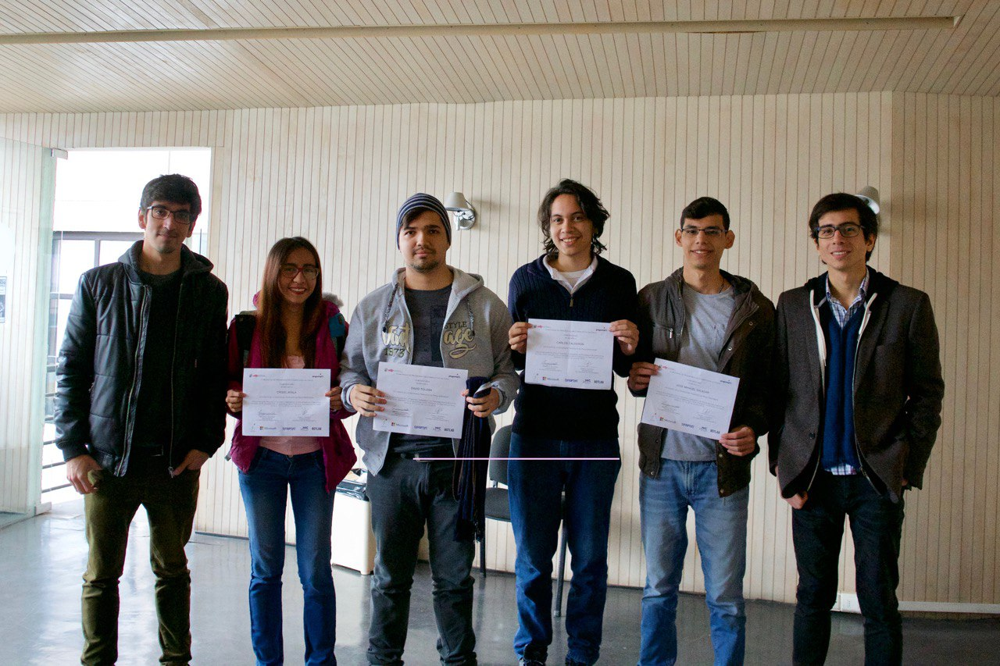
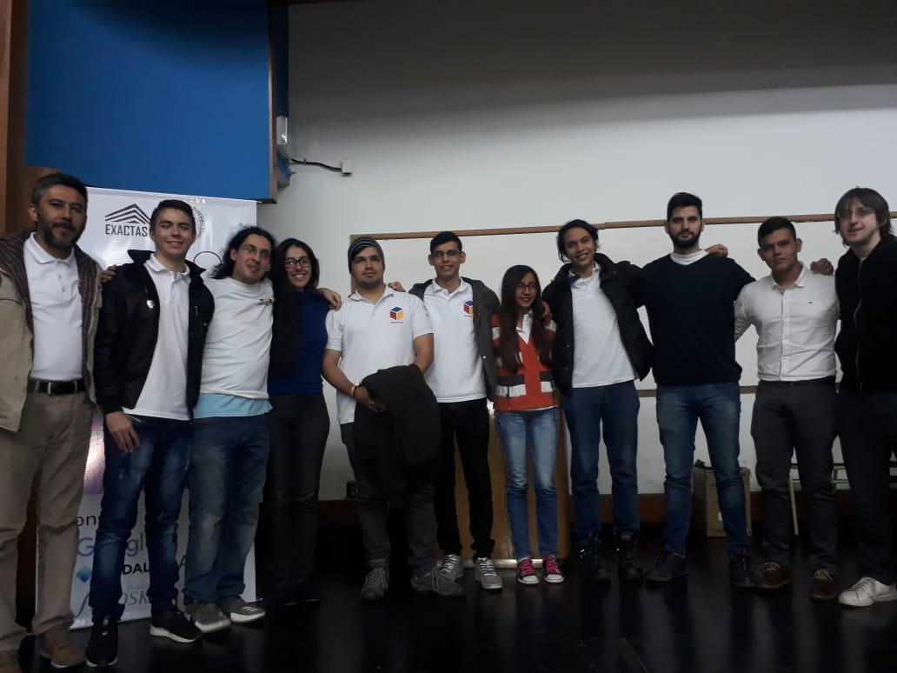
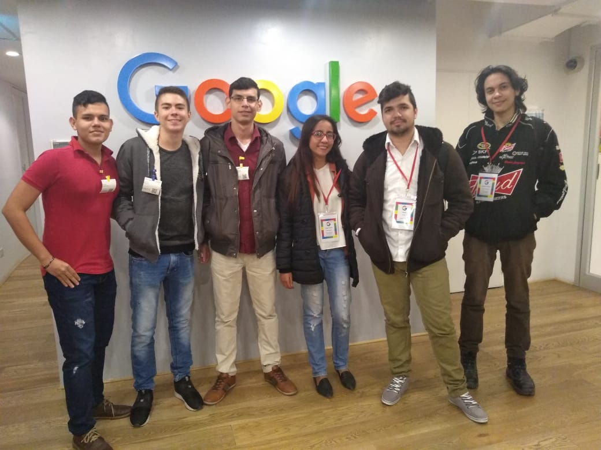
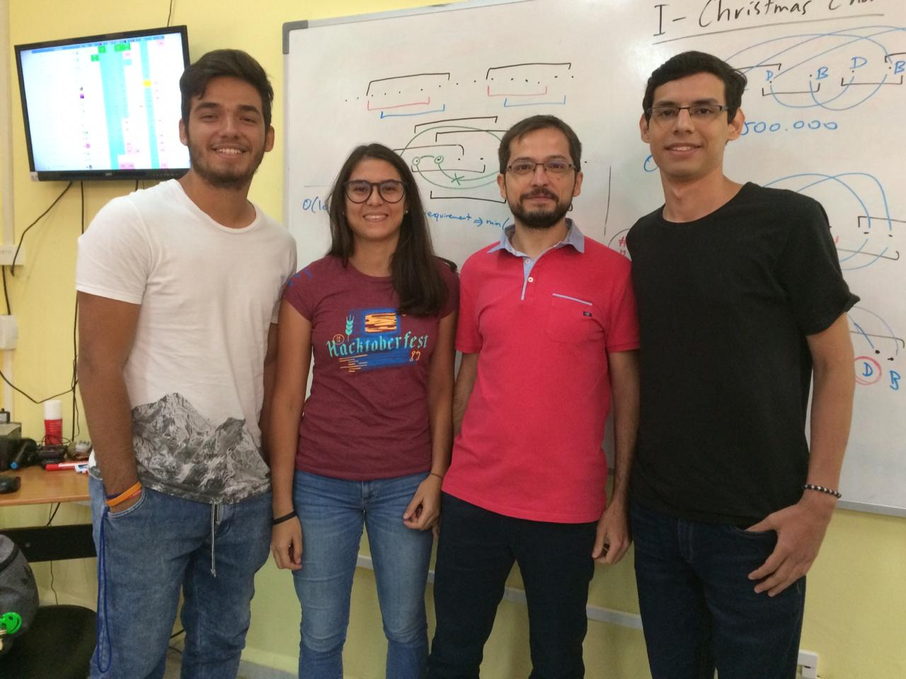
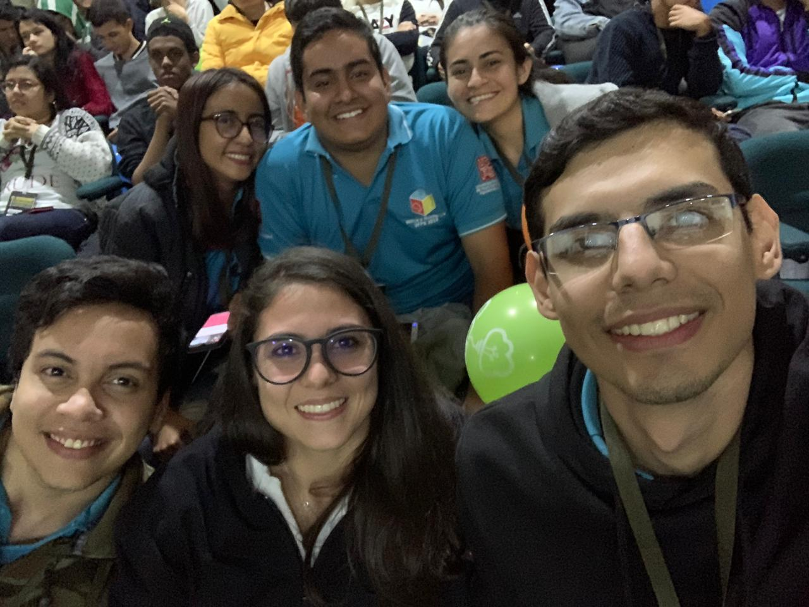

¡BIENVENIDOS!
PROGRAMACIÓN COMPETITIVA UFPS
SILUX
Diviertete pensando, creando y resolviendo!
¿Qué es la programación competitiva?
Son competencias donde se mide las habilidades de programación y algoritmia de los participantes para resolver un conjunto de prolemas lógicos y matemáticos.
La mas importante es la competencia ICPC (International Collegiate Programming Contest) auspiciada por la asociación ACM, que se realiza anualmente alrededor del mundo (3.233 universidades en 110 paises de los 6 continentes).
¿Cómo son las competencias?
(ICPC)
- Equipos de 3 personas
- 1 computador por equipo
- Conjuntos de entre 9 y 13 problemas
- 5 horas de competencia
- Gana el equipo que resuelve más problemas en menos tiempo
- Cada equipo cuenta con un coach que puede ser profesor o estudiante
¿Cómo se califican los equipo?
En una competencia de programación se califica la capacidad de resolver problemas correctamente, y la rapidez para hacerlo.
El puntaje de un equipo consta de dos números: El número de problemas resueltos y la suma de los tiempos, en minutos, en los cuales se resolvió cada problema.
Cada intento incorrecto penalizará al equipo con 20 minutos adicionales solo si al final el problema es resuelto.
Gana el equipo con más problemas resueltos en menos tiempo.
¿Cúales son las posibles respuestas al enviar una solución?
NO - WRONG ANSWER
NO - COMPILATION ERROR

NO - RUNTIME ERROR
NO - PRESENTATION ERROR
NO - TIME LIMITED EXCEEDED
YES - ACCEPTED
¿Qué beneficios trae participar en programación competitiva?
- Proyección académica y profesional
- Desarrollo de competencias como resolución de problemas computacionales, lógica de programación y optimización de código
- Habilidades en análisis, diseño e implementación de soluciones algorítmicas.
- Habilidades en el manejo de estructuras de datos
- Fortalecimiento de habilidades blandas como trabajo en equipo, comunicación y liderazgo.
- Conocer, compartir y competir con más personas de dentro y fuera del pais
- Retos y superación intelectual y personal
- Fortalecimiento del nivel de lectura y comprensión en inglés.
- Oportunidades laborales y de pasantias con grandes empresas como Google, Facebook, Microsoft y demás.
- Viajes y muchas experiencias
¿En qué se programa?
Lenguajes de programación
¿Dónde se puede entrenar?
Entrenamientos virtuales
Entrenamientos presenciales
Competencias Oficiales
ACM ICPC
Para poder participar en las competencias oficiales de ICPC debes cumplir con POR LO MENOS UNO DE LOS SIGUIENTES REQUISITOS:
- Haber iniciado los estudios Universitarios en el 2016 o después.
- Haber nacido en 1997 o después.
- Llevar máximo 8 semestres en la carrera.
Maratón de programación UFPS
Maratón Nacional ACIS-REDIS
Maratón Regional Latinoamericana ACM-ICPC

Maratón Mundial
Maratón Mundial
Aún no :( pero para eso continuamos trabajando en comunidad! :D
Campamentos de programación
Gracias al apoyo por parte de nuestro director de semillero, el programa de ingeniería de sistemas y la UFPS, hemos tenido la oportunidad de participar en campamentos intensivos de programación a nivel nacional e internacional donde hemos adquirido muchos conocimientos, experiencias, y tambien conocimos y compartimos con muchas personas y amigos!
Campamento en Bogotá, Colombia
Campamento en Santiago, Chile
Campamento en Buenos Aires, Argentina
Oficinas de Google en Buenos Aires, Argentina
Campamento en La Habana, Cuba
Campamento en Ubaté, Colombia
(Este no fue pago por la U :c)
Dinámica del grupo de estudio
Reunión semanal en SB404:
Viernes de 2:00-4:00pm sesión básica
Viernes de 4:00-6:00pm sesión intermedia
Cada semana se tratará un tema de importancia en las maratones.
Además se propondrán un conjunto de ejercicios (3-4) sobre los
temas estudiados. En todas las sesiones se dispondrá de un
espacio de tiempo para discutir los ejercicios propuestos.
Temas de Estudio
- Introducción a la Programación Competitiva
- Paradigmas de programación
- Estructuras de datos
- Algoritmos sobre Grafos y redes de flujo
- Matemáticas y todos sus derivados
- Geometría computacional
- Algoritmos sobre strings
- Análisis de complejidad algoritmica
¿A quién es este llamado?
Este llamado es a todas aquellas personas que se sientan a gusto compitiendo, que les guste el trabajo en equipo, que sientan gusto por la programación y los algoritmos, que quieran retarse a sí mismos y llevar sus capacidades al límite, todos aquellos que quieran ampliar sus conocimientos y que quieran competir con los mejores de la universidad, del país y ¿por qué no? del mundo.
Y sobre todo: tener la disciplina para entrenar ¡El resto lo trabajamos juntos! :)
Únete a nuestro grupo en Facebook. Allí informaremos sobre los eventos a realizar, compartiremos material de estudio, y resolveremos inquietudes entre todos. Sólo ve a http://goo.gl/AqVFp4 o busca "Grupo de Estudio Programación Competitiva UFPS".
¿Preguntas?
Muchas gracias y
¡Bienvenidos!